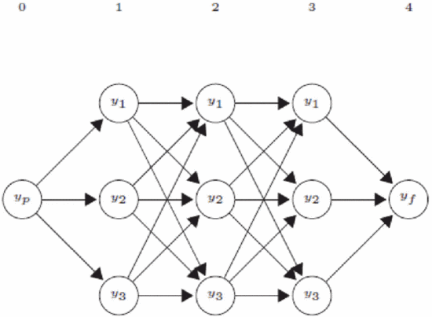
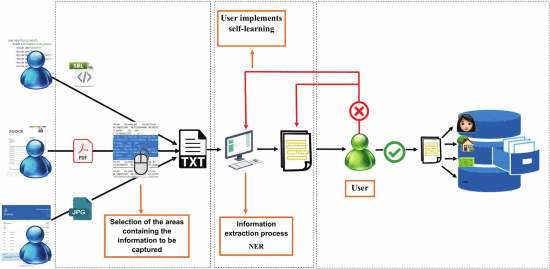
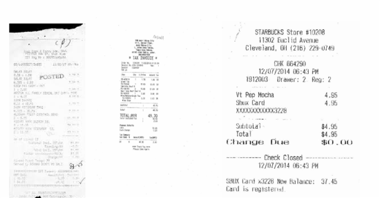
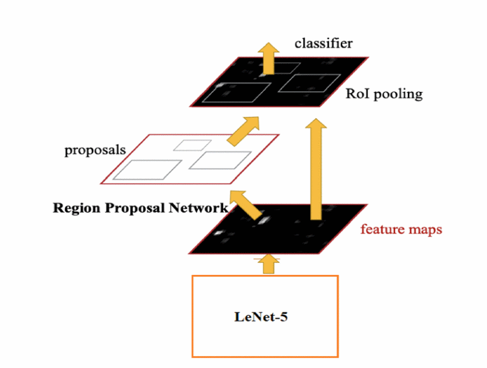
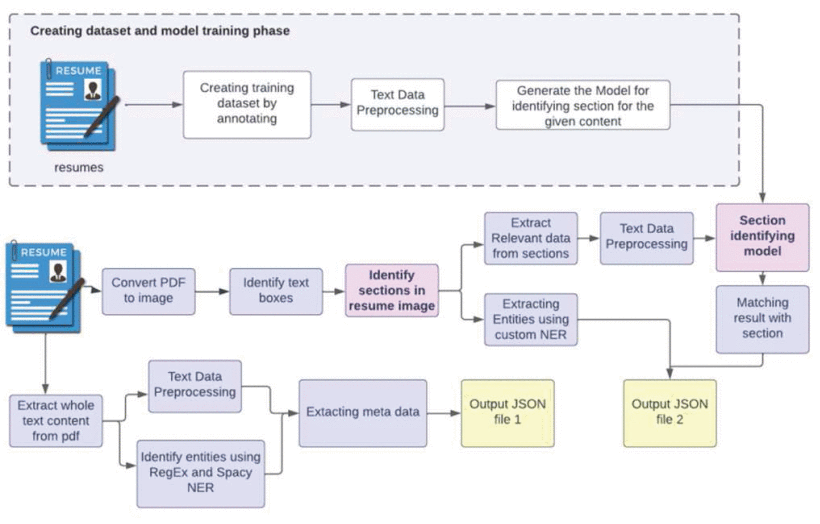
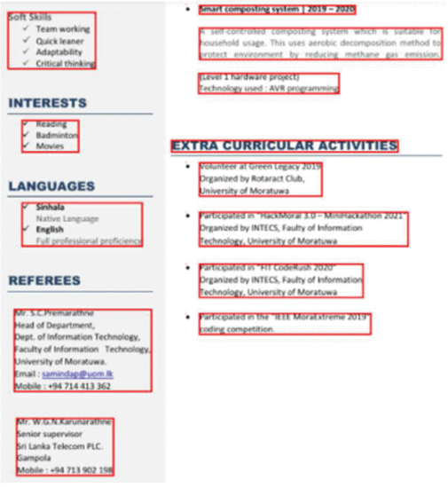
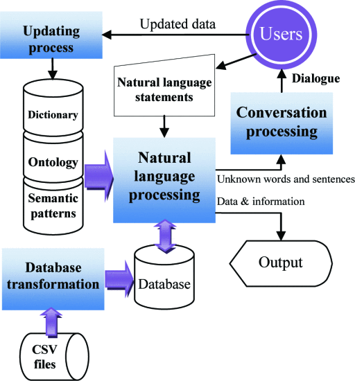

Data entry roles are prevalent today, but they often involve repetitive tasks such as extracting information from documents and inputting it into spreadsheets or databases. For instance, when monitoring our finances, we may find ourselves sifting through numerous transactions from different sources in our bank accounts. Instead of manually reviewing receipts and invoices, we can leverage the capabilities of Natural Language Processing (NLP) and Computer Vision for efficient financial tracking. By utilizing AI, we can simply take a picture of a receipt or invoice, and the system can automatically extract the transaction details and populate them into a spreadsheet, streamlining the process significantly.
The challenge of efficiently processing large volumes of unstructured or semi-structured financial documents, such as invoices and receipts, poses significant hurdles for organizations in terms of accuracy, speed, and reliance on manual intervention. Traditional data extraction methods often depend heavily on human input, which can be time-consuming and error-prone. Invoices and receipts frequently contain vital financial information arranged in various layouts, making it difficult to capture key details like transaction amounts and vendor names without employing advanced techniques. While Optical Character Recognition (OCR) systems can effectively convert text from images, they often struggle with noisy data and irregular document formats, complicating financial tracking. Additionally, extracting and parsing structured data from these documents requires sophisticated Natural Language Processing (NLP) capabilities to accurately analyze and transform data into usable formats. Consequently, the development of automated systems that utilize computer vision and NLP for processing financial documents is essential for enhancing data extraction efficiency, improving financial tracking accuracy, and minimizing the need for human oversight.
The challenges associated with processing unstructured and semi-structured documents, such as invoices and resumes, are multifaceted and complex. One major challenge is the variability in document layouts and formats, which can lead to difficulties in accurately identifying and extracting relevant information. Invoices, for example, may vary significantly in design, font, and organization, making it hard for Optical Character Recognition (OCR) systems to effectively capture text. Additionally, the presence of background noise, low resolution, and distortions in scanned documents can further hinder OCR performance, resulting in errors during data extraction. Furthermore, implementing robust natural language processing (NLP) techniques to understand the context and semantics of the information requires advanced algorithms that can adapt to diverse language patterns and terminologies. Another challenge lies in ensuring the accuracy of extracted data; without effective validation mechanisms, errors can propagate through subsequent processing steps, leading to unreliable outputs. Lastly, integrating user feedback to refine the model and improve accuracy introduces additional complexity, as it necessitates a responsive system that can adapt to changing user requirements and document characteristics over time.
According to the article "A Natural Language Processing Tool to Support the Electronic Invoicing Process in Italy" from IEEE Explore, the authors developed an e-invoicing system focuses on semantic data capturing, particularly for processing electronic documents without a predefined format. The system is divided into four functional blocks: identifying key sections like sender and receiver information (Fb1), extracting content into plain text (Fb2), applying Named Entity Recognition (NER) to classify data into predefined categories (Fb3), and validating the extracted data with self-learning techniques for improved accuracy (Fb4). When structured documents like XML or predefined PDFs are uploaded, the system retrieves and stores relevant data directly, bypassing the NER process. For unstructured documents, the system assists users by allowing them to select portions of the document for information extraction, which is then processed through NER to populate the e-invoice, with the user verifying the data for correctness.
A key part of the system is the optimization module in FB3, which handles unstructured invoices by reducing the need for human intervention. This module applies the NER methodology to associate labels with tokens in the document, managing complex data types like quantities, prices, and discounts. The module also addresses challenges like managing a high number of labels, handling heterogeneous data (e.g., numerical and literal), and ensuring that labels like "quantity" and "unitary cost" are associated with only one token. Through logical constraints and long-distance dependencies, the system ensures accurate data capture from semi-structured invoices.
In invoice and bill extraction, documents are typically seen as a sparse collection of multiple text blocks rather than a single, continuous text. Most invoice documents display semi-structured data with key fields and company details. Object detection is used to predict the classes of identified objects in these documents, employing image classification and localization algorithms. Before applying object detection, image preprocessing is crucial to standardize the input, helping to normalize the image, improve Optical Character Recognition (OCR) accuracy, and better identify object classes.
Data preparation is a significant step, especially since many invoices are scanned, leading to irregularities and variations that hinder direct processing. Scanned images often suffer from low resolution and background noise, which impacts OCR performance. Preprocessing techniques such as skew correction, noise removal, and grayscale conversion are applied to enhance image quality. Skew correction addresses distortions caused during scanning, while denoising methods like Gaussian blur reduce noise without affecting image features. Additionally, image binarization, such as Otsu’s method, converts grayscale images to black-and-white, improving the clarity of text lines. Morphological operations like dilation and erosion further refine the image structure for better text extraction.
The proposed model for object detection builds on Faster R-CNN, which is known for its accuracy in deep learning-based object detection. While earlier models like R-CNN and Fast R-CNN faced bottlenecks due to slow region proposal processes, Faster R-CNN introduced the Region Proposal Network (RPN) to speed up object detection. The model in this study aims to combine the high accuracy of YOLO with the reduced complexity of Faster R-CNN by using RPN and incorporating the simpler LeNet-5 network for feature extraction.
For data extraction, OCR is employed to convert scanned documents into machine-readable text. This technique allows computers to recognize and interpret textual content from physical documents. The Tesseract OCR engine v4 was utilized in this work, which plays a crucial role in recognizing characters from unstructured or semi-structured documents. OCR technology has wide-ranging applications, including invoice and receipt processing, 3D object recognition, and mailroom automation, making it a vital tool in automated document handling.
The layout-aware extraction technique implemented in the system optimizes resume parsing by classifying content into sections such as Profile, Education, Projects, and Referees. This is achieved through a multiclass classification algorithm, alongside a custom Named Entity Recognition (NER) component built using spaCy. The NER identifies key entities like names, skills, and contact information. Additionally, regular expressions and metadata extraction tools help retrieve important details from resumes. The system also detects sections by analyzing the spacing between bounding boxes around words, which assists in better text segmentation.
To further refine the layout detection, the system used layout parsers to identify the spatial structure of the resume and detect paragraph boundaries based on the gaps between word boxes. By applying an algorithm that measured the spaces between these boxes, the system could accurately distinguish between different sections of the resume. This approach allowed the resume content to be effectively divided into coherent paragraphs and sections, ensuring accurate extraction of section-specific information for further analysis.
The layout-aware extraction technique used for resume parsing can be adapted for invoice processing. Invoices, like resumes, have structured sections such as vendor details, line items, and totals. By using a multiclass classification model and Named Entity Recognition (NER), the system can accurately identify and extract key invoice details like vendor names, dates, and amounts. Layout parsers help detect specific sections by analyzing spaces between word boxes, improving the accuracy of data extraction. Combined with OCR for text recognition, this approach enhances the automation and reliability of invoice processing.
According to "Information Processing and Retrieval from CSV File by Natural Language" from IEEE Explore, the author's model algorithm includes four parts: database transformation, natural language processing, conversation processing, and model updating. The system first converts CSV files into databases by analyzing the structure and generating SQL statements. Then, natural language inputs are processed through lexical, syntactic, and semantic analyses to extract relevant database components. If errors occur, the conversation processing module engages users in a dialog to correct mistakes, enhancing the model with user feedback. Finally, the model is continuously updated to improve its efficiency by refining the dictionary, semantic patterns, and ontology based on user interactions.
The model development process begins with analyzing 4,500 natural language messages for word structure and basic ontology rules, which are used to build a dictionary and semantic pattern. Program modules are then developed for database transformation, natural language processing, conversation processing, and model updating. A critical aspect of the process is identifying keywords in sentences related to database components such as table names and query conditions, which are then used to update the model's dictionary and semantic rules. The model is tested with 50 users, and their feedback helps refine the system.
The process of model development and natural language processing in this research shares similarities with how computer vision techniques can be applied to invoice processing. Just as natural language messages are analyzed for structure and keywords to extract database components, computer vision systems can analyze the layout and content of invoices to identify key elements such as vendor names, line items, and totals. By employing techniques like optical character recognition (OCR) to extract text, followed by structured data analysis through semantic patterns, an invoice processing system can accurately parse and segment various sections. Additionally, the conversation processing module used for correcting errors in natural language inputs can be adapted to improve the accuracy of invoice data extraction by refining models based on user feedback, ensuring more precise data retrieval over time.
In conclusion, the application of both natural language processing (NLP) and computer vision to document handling, such as resume parsing and invoice processing, demonstrates significant advancements in automating complex data extraction tasks. Techniques like layout-aware extraction, semantic analysis, and Named Entity Recognition (NER) are essential for efficiently capturing structured and unstructured data from documents. The use of optical character recognition (OCR) in computer vision further enhances the extraction process by converting images or scanned documents into machine-readable text, particularly for semi-structured or unstructured invoices. Combining these methodologies with self-learning and user interaction modules optimizes the accuracy of data extraction while reducing manual intervention.
Additionally, applying principles from NLP, such as lexical and syntactic analysis, to CSV file parsing shows that the automation of document-based workflows extends beyond visual documents to text-based formats as well. In all cases, continuous model updates based on user feedback and interactions help refine the system, making it more efficient and capable of handling diverse document formats. The future of document processing lies in the seamless integration of these advanced techniques, enabling faster, more accurate, and scalable solutions for industries reliant on large volumes of paperwork, such as finance, legal, and business operations.